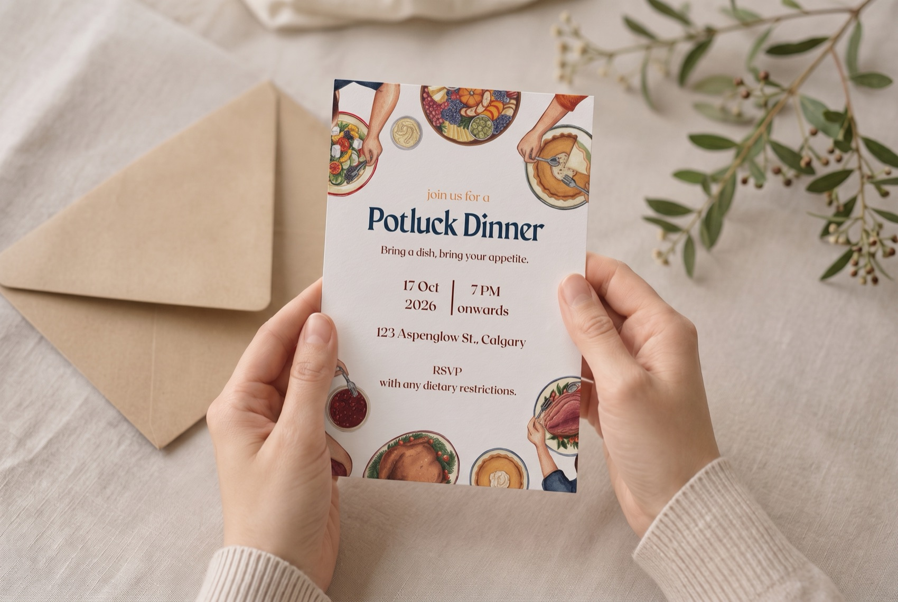
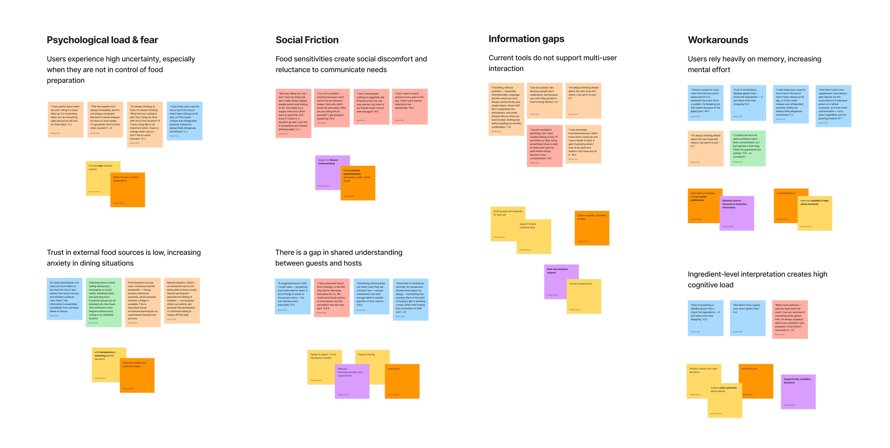
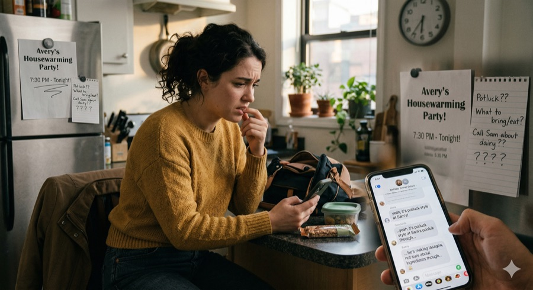
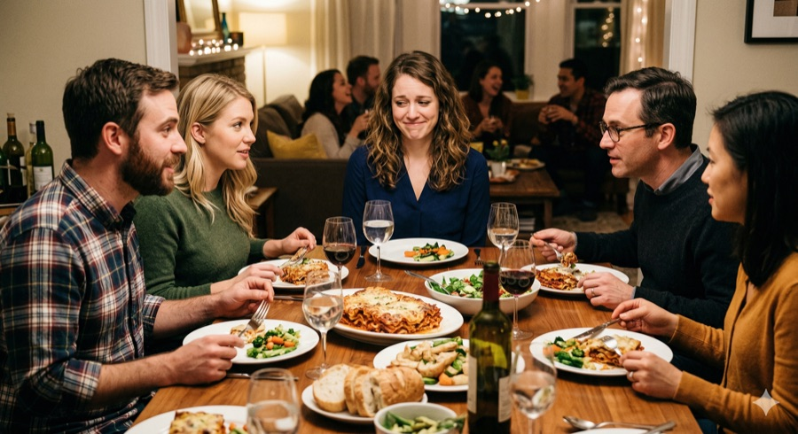
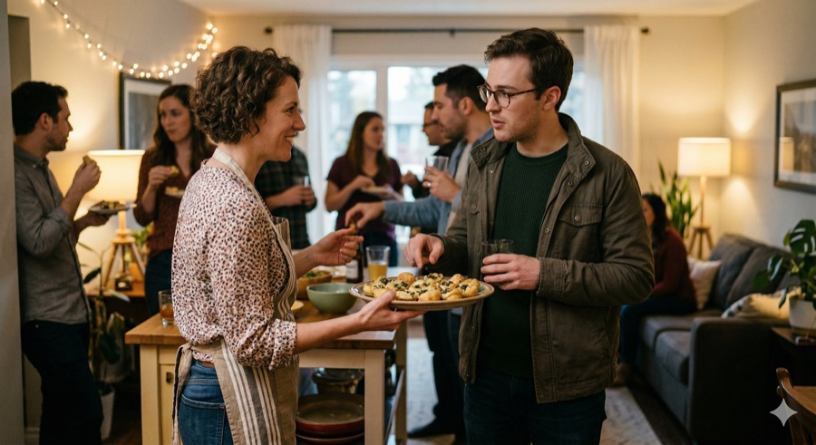

Setting a table everyone can join
Hosts planning group meals were chasing allergy info through scattered texts, where one missed reply could put someone at real risk. We built a way to collect it from every guest and recommend menus that work for the whole group.

The calculation before the RSVP

When a potluck invitation arrives, I run the same calculation: is there anything I can actually eat, and if not, how do I bring it up without making the host feel bad? I've been doing this for over a decade, since gluten and dairy stopped working for me.
Most people with food sensitivities would rather risk it or skip it than have that conversation. And every time we stay quiet, the host loses too: they never get the chance to host us well. That's the version of the problem I wanted to solve, and it isn't the guest's to fix alone. It also turned out not to be a small one.
A social problem with solo tools
It shows up socially
We started with the literature, first to understand the scale.
A large group, and a wide range of things that can trigger a reaction. The scale is clear. The shape of the problem is less so.
So we looked at how it plays out in social settings. There's a name for what we found: intrapersonal leisure constraint, where the fear of a reaction limits social participation.
The pattern is anticipatory. Risk gets assessed long before the meal, and the social cost of speaking up gets weighed against the physical cost of staying quiet. Often, staying quiet wins.
What the literature had far less of was the other side of that table. So we went to find it.
AI in the process
- Manual + Gemini in parallel
- We searched the web ourselves while Gemini ran its own search, asking it to work only from credible, citable sources.
- Verification by hand
- Every paper, study, and site it surfaced was opened and read directly before anything made it into the research.
- Mind map
- The verified findings were structured into a map with source links attached to each branch.
We interviewed both sides of the same table.

Uncertainty spikes when you're not the one cooking, and trust in outside food sources stays low.

Speaking up feels costly, and guests and hosts are working from different assumptions.

Existing tools are built for the person with the allergy, not for the host trying to understand it.
People lean on memory and ingredient-by-ingredient interpretation, which is expensive.

AI in the process
- Manual first
- Color-coded the transcripts by hand into four categories.
- Gemini
- Consolidated the quotes within each category and merged duplicates, working from our hand-coded notes.
- Figma plugin
- Turned the consolidated quotes into a sticky-note affinity map.
- Nano Banana
- Visualized the four scenes above from the user needs we pulled out of each category.
Everyone solves it for one person
We screened ten apps in the food allergy and sensitivity space, then downloaded the five with the most overlap with our problem and used them ourselves, mapping each against unique value, advantages, and shortcomings.
| Product | Strength | Shortcoming |
|---|---|---|
| Find Me Gluten Free | Verified, high-trust listings | No host or social layer |
| Fig | Strong IA, conversational interaction | Individual-focused experience |
| Olive | Gamified scoring creates engagement loops | Individual-focused, unclear sourcing weakens trust |
| Yuka | Intuitive scoring system | Individual-focused, oversimplifies high-stakes decisions |
| Monash FODMAP Diet | Clinical credibility, consistent taxonomy | Disconnected from social use |
They solve the problem in genuinely different ways: barcode scanning, personal scoring, clinical trigger data, verified restaurant listings. But the shortcomings column kept saying the same thing: every one is designed around a single user, which is what our interviews had already told us.
AI in the process
- Manual + Gemini in parallel
- We searched the App Store ourselves while Gemini ran its own search.
- Where the lists diverged
- Some of Gemini's suggestions had little real overlap with our problem, and some apps it never mentioned turned out to be closer. We reviewed candidates on the web first, then downloaded them.
- Hands-on verification
- We used Gemini's read on each app's strengths and shortcomings as a starting point, then tested every claim ourselves before it went into the matrix.
From personalization to aggregation
Safety checks for one person are a solved problem. What no one was building for was the harder version: one meal that works for several people with different restrictions at once. That isn't personalization. It's aggregation, and it only exists when someone is coordinating for a group.
When we started, we explored features serving both the host and guest sides. Once we knew what the market already did well and what it left out, the priorities became obvious.
Indistinguishable from what's already on the market.
A single-user lookup, which our advantage can't reach.
The input that makes group aggregation possible.
The core: every guest's restrictions solved in one menu.
Extends the same group check into grocery shopping.
How might we help a host plan one meal that works for everyone at the table, without putting the burden of asking on either side?
Who we're designing for
"I want everyone to feel welcome and safe"
Loves having people over. Asking everyone about restrictions each time is awkward, and he rarely gets a full picture back before he has to shop.
- Know who has which restrictions before shopping or cooking
- Plan one menu that works for everyone
"I just want to feel safe and not be a burden"
Celiac for six years. Cooks at home most nights and eats before parties just in case, since asking about ingredients feels like making a scene.
- Get dietary needs to the host without an awkward conversation
- Feel included rather than singled out
From sketches to three screens
We sketched loosely first, then reworked the screens around the narrowed scope.
Working out what belonged on each screen, and which of Stitch's generated layouts were worth keeping.
Responding to an invitation shares dietary information with it, so nothing has to be brought up separately.
Restrictions are counted across the guest list rather than listed per person, with recipes grouped by course underneath.
The host picks which event to check against before scanning, so results reflect that guest list.
AI in the process
- Input
- We wrote out the features that mattered most and fed them in alongside references pulled from Mobbin and Dribbble.
- Google Stitch and Claude Design
- Generated prototypes in several different directions.
- Selection, not acceptance
- We picked the ones closest to our thinking and talked through what specifically worked about each.
- Back to paper
- We redrew the wireframes ourselves, keeping what fit and adding what the generated versions had missed.
From invitation to the table, one guest list carries it.
The screens follow a single dinner: Maya sends the invitations, Liam accepts, and the guest list turns into a menu she can cook from.
There's no message to send and no reply to write. The information moves with the invitation, and both sides get to spend the evening on something other than managing it.
Events
Maya plans a BBQ and invites who she wants. What she sees first isn't a menu, it's how many guests have replied.
Profile / Dietary Profile
One invitation lands with Liam, who set his profile once. Accepting sends it.
Event details
The replies come back as one set of constraints: gluten-free (3), dairy-free (2), tree nut-free (1). The menu below is already filtered against all of them.
Scan
At the store, Maya scans against that event's guest list. Results name the reason, not just the verdict, so safe and avoid never rest on colour alone. An AI chat stays available throughout, for the small questions that come up along the way.
AI in the process
- Google Stitch and Claude Design
- We fed the reworked wireframes back in, this time with much more detailed specs, and generated prototypes from them.
- Review before building
- We went through how our ideas had actually come through, and decided screen by screen what to keep and what to change.
- Figma
- We built the final screens ourselves from those decisions.
What I'm taking with me
Seeing it beats knowing it
The competitive analysis had already told us the market was full of tools built for one person, and we still tried to keep that flow. It wasn't until we were drawing screens that we could see how much it blurred the app's focus. Some decisions only become obvious once they're in front of you.
More AI input, more judgment required
It consistently gave us more angles than we would have found on our own, which meant more material to sort through. The skill I want to keep building is judgment: knowing what to keep, what to verify, and what to set aside.
An open question about how much detail helps
Allergies vary widely, and so do the ways they're triggered. Severity, cross-contamination, how someone reacts: each of these could make the recommendations more accurate, or just make the app harder to use. Where that line sits is something we still need to test.

Cudagra
2,000 people had signed up, but almost nobody was playing. We redesigned the profile and invite flow around trust.

ürcareer
Career changers were navigating alone with generic job boards. We built tailored matches, mentors, and community.

Creating a Path to Well-Being in the Social Media Maze
Social media's effect on well-being is tangled and contradictory. Mapped it to find where the system can be moved.